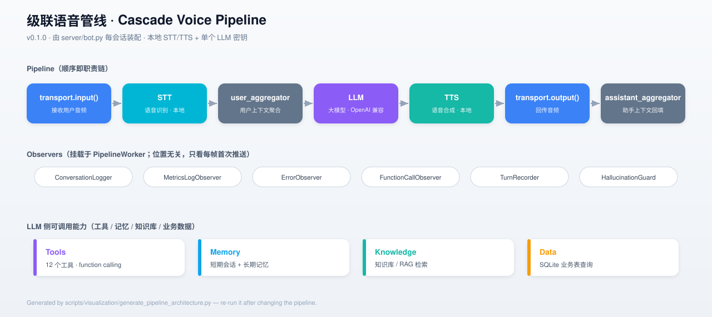
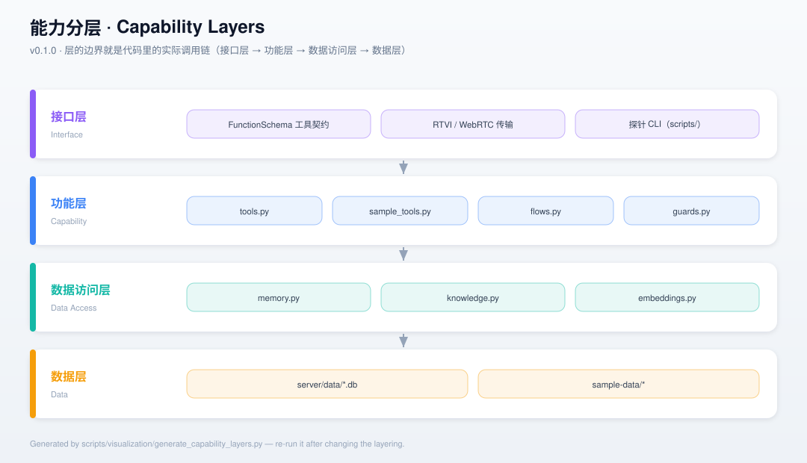

pipecat-quickstart
一个能跑的实时语音对话 Agent —— 级联管线
VAD → ASR → LLM → TTS，
语音识别与合成全部跑在本地，整个项目只需要一个 LLM 密钥。
01 项目简介
它解决什么问题，凭什么值得一看。
解决什么
自己搭实时语音对话系统最难的不是模型，而是编排：判断用户说完没有、可打断、边收边说、多服务商切换。本项目用 Pipecat 把
VAD → ASR → LLM → TTS 串成一条低延迟管线，并把「写自己的业务」所需的记忆、知识库、工具、护栏、编排全部落地。
核心取舍
语音全本地、思考走云端：STT（SenseVoice）与 TTS（Piper）在本机运行，零云调用零费用； 只有 LLM 走云端（默认魔搭 ModelScope，OpenAI 兼容，可切商汤 / 共绩）。因此整个项目只填一个密钥。
与「只是调用库」的差别
框架只提供接线板（工具注册、上下文、编排）。数据怎么存、工具怎么写、什么时候不该让模型自由决定 —— 这些换框架带不走的部分，本项目都实现并配了可复跑的探针。
验证优先
13 个脚本覆盖「每个能力都配一个可复跑探针」，113 个单元测试守着架构边界；结论不靠「看起来对」，靠实测输出（见评测结果）。
02 架构全景
级联管线、观测器挂载点与 LLM 侧能力（hover 节点查看说明）。

docs/pipeline-architecture.svg
docs/capability-layers.svg03 技术栈
依赖与选型，全部取自 server/pyproject.toml 与实际代码。
| 层 | 选型 | 说明 | 需要密钥 |
|---|---|---|---|
| 语言 | Python ≥ 3.11 | 推荐 3.12；用 uv 管理环境 | 否 |
| 框架 | pipecat-ai ≥ 1.12 | 实时语音编排（Pipeline / Frame / Processor） | 否 |
| STT | SenseVoice / Whisper | 本地运行，中文最优；缺依赖自动降级 Whisper | 否 |
| TTS | Piper / Kokoro | 本地运行；Piper 低延迟，Kokoro 音色更自然 | 否 |
| LLM | ModelScope / SenseNova / Suanli | 三家均为 OpenAI 兼容接口，切换只改环境变量 | 是（唯一） |
| VAD | Silero VAD | 「说完」判定；stop_secs 默认 0.6s 适配中文 | 否 |
| 存储 | SQLite | 会话 / 长期记忆 / 业务表 / 知识库向量（WAL 加固） | 否 |
| 嵌入 | bge-small-zh-v1.5 | 本地 transformers + torch；可切 OpenAI 兼容 embeddings | 否 |
| 测试 / Lint | pytest · ruff · pyright | 113 个单元测试；lint 规则 I / UP | 否 |
04 核心能力
「往管道里灌业务」的八件套，每件都配了可复跑的探针。
记忆（双层）
短期会话（turns）+ 长期记忆（facts），会话注入 + 工具双层读写。
知识库 / RAG
本地嵌入 + SQLite 向量检索 + 词面重排，文档语义检索。
结构化查询
query_data：表 / 列白名单 + 参数化 SQL，模型不写 SQL。
工具系统
12 个工具，统一异常兜底、状态按会话隔离、按需加载。
可信性护栏
检测「谎报执行」并强制纠正，语音场景最危险的失效模式。
显式编排
多步工具链写成复合工具，顺序由代码保证而非模型即兴。
上下文摘要
框架自带 LLMContextSummarizer，超阈值自动压缩。
全量日志
[BOOT]/[TURN]/[TOOL] 等前缀，跑一次即可定位问题。
05 评测结果
全部为项目内实测数据（可复跑）。切换 Tab 查看不同维度。
| ASR 引擎 | 字错率 | 单句耗时 |
|---|---|---|
| Whisper base | 23.8% | 607 ms |
| Whisper small | 13.6% | 874 ms |
| SenseVoice（默认） | 10.2% | 158 ms |
SenseVoice 非自回归，是「又快又准」而非取舍：比 base 快约 4×，字错率不到一半。数据源 scripts/asr_bench.py（6 句中文测试集）。
| TTS 引擎 | 首块延迟 | 音色 |
|---|---|---|
| Piper（默认） | 76 ms | 偏机械 |
Kokoro zf_xiaoxiao | 709 ms | 明显自然 |
TTS 是实打实的取舍：换 Kokoro 要多付约 630 ms。语音助手对「多久开口」敏感，故默认 Piper。
| 模型 | 默认（带思考） | 关闭思考后 | 提升 |
|---|---|---|---|
| nex-agi/Nex-N2.5-mini | 830 ms | 710 ms | — |
| Qwen/Qwen3.8-Flash-Next | 2869 ms | 787 ms | 3.6× |
| deepseek-ai/DeepSeek-V4.1-Flash | 2447 ms | 817 ms | 3.0× |
默认 LLM_DISABLE_THINKING=1：语音场景不需要长篇推理，关掉后三个模型均进入 1 秒内。
| 阶段 | 2026-10-01（魔搭 nex） | 2026-10-05（商汤） |
|---|---|---|
| 说完 → VAD 判定 | 454 ms | 453 ms |
| → STT 最终文本 | 1012 ms | 859 ms |
| → LLM 首 token | 1545 ms | 2038 ms |
| → TTS 首次出声 | 1705 ms | 2071 ms |
scripts/verify_stack.py 口径：基准为「合成音频推流结束」，真实体感需 +0.45s；两次复测服务商不同，数字不可直接相减。
| 指标 | 旧默认（300/0 纯余弦） | 出厂配置（500/50 + 重排） |
|---|---|---|
| hit@1 | 33% | 53% |
| hit@3 | 40% | 80% |
| MRR | 0.41 | 0.69 |
语料 = 仓库自身文档 + 15 个手写用例（scripts/kb_eval.py）；文档一增补绝对值会漂移，只有同一次运行内的相对比较有意义。
06 快速开始
约 5 分钟跑通；唯一需要动手的是填一个 LLM 密钥。
# 1) 安装依赖（含默认中文 STT 所需依赖）
cd server
uv sync --extra sensevoice
# 2) 配置密钥（唯一需要注册/付费的地方）
cp .env.example .env # 填 MODELSCOPE_API_KEY
# 3) 首次建议预热本地模型（否则第一个会话才下载，期间首句无响应）
uv run ../scripts/prewarm.py
# 4) 启动
uv run bot.py
# 浏览器打开 http://localhost:7860/client，点 Connect，允许麦克风即可对话自检探针
uv run ../scripts/smoke.py 无浏览器冒烟测试（前端 + 握手 + 装配）。
工具调用自检
uv run ../scripts/verify_tools.py 直接驱动真实管线检查工具调用。
端到端自检
uv run ../scripts/verify_stack.py 完整链路（含 STT/LLM/TTS）。
07 目录结构
点击展开/折叠；每个节点附带一句话说明。
server/ 主程序与本地服务装配
bot.py主程序：装配管线 + fail-fast + 开场白settings.py默认值 + 本地服务构造的唯一来源（防漂移）tools.py工具注册中心（新增能力改这里）sample_tools.py示例工具集（天气/计算/换算/设备/通知/提醒）memory.pySQLite：会话历史 + 长期记忆 + 业务表 + 落库观察者knowledge.py知识库：文档切块 + 向量检索embeddings.py文本嵌入（本地 bge / OpenAI 兼容可切换）flows.py显式编排：多步工具链（复合工具）guards.py可信性护栏：谎报执行检测 + 强制纠正pipeline_logging.py日志、对话时间线、故障上报tests/113 个 pytest 单元测试pyproject.toml依赖（含 sensevoice 可选 extra）
scripts/ 自检 / 探针 / 基准 / 采集 / 可视化
verify_stack.py端到端自检（完整链路，较慢）verify_tools.py工具调用自检 + --repeat 成功率统计verify_layers.py分层联通性自检（含「清空数据层必须答查不到」的证伪）verify_summarize.py上下文摘要自检audio_probe.py音频链路探针（真实音频进 / 出，含 STT 与 VAD）text_probe.py文本通道探针asr_bench.pyASR 基准（字错率 / 耗时对比）kb_eval.py知识库检索质量评测ingest_docs.py把文档灌入知识库（RAG 写入侧）collect_orders.py业务数据采集示例（采集与查询分离）prewarm.py预热本地模型visualization/生成 docs/ 下 SVG 架构图
docs/ 文档 + 架构图
HANDBOOK.md第一阶段：怎么从零搭起来HANDBOOK-02.md第二阶段：怎么写自己的业务TOOL_TESTS.md工具调用压测报告（引用前先读作废声明）pipeline-architecture.svg/capability-layers.svg架构图
sample-data/ 数据层样例（都是文件，不是代码）
demo-business.json指标/主机/告警/订单，启动时加载business-schema.json可查的表/列声明（换库不用改代码）sample-tools.json城市天气 / 设备清单orders.csv18 笔订单（采集示例）
reference/ 已冻结的调研项目（只读）
pipecat-modelscope/模型选型报告 + 5 个基准脚本 + ANALYSIS.md
根目录文件
README.md项目入口与全部能力说明LICENSEMIT 许可证CONTRIBUTING.md贡献指南CHANGELOG.md更新日志AUTHORS作者.gitattributes/.pre-commit-config.yaml行尾规范 / pre-commit 钩子
08 使用示例
代码全部摘自项目实际源码（非伪代码）。
装配管线（server/bot.py）
pipeline = Pipeline(
[
transport.input(),
stt,
user_aggregator,
llm,
tts,
transport.output(),
assistant_aggregator,
]
)定义一个新工具（server/tools.py 的模式）
async def remember_fact(params: FunctionCallParams) -> None:
args = params.arguments or {}
key = str(args.get("key", "")).strip()
value = str(args.get("value", "")).strip()
if not key or not value:
await params.result_callback(
{"ok": False, "error": "key 和 value 都不能为空"},
properties=_RESULT_PROPS,
)
return
memory.put_fact(key, value)
await params.result_callback(
{"ok": True, "key": key, "value": value,
"spoken": f"记住了：{key}是{value}"},
properties=_RESULT_PROPS,
)切换 LLM 服务商（server/.env，无需改代码）
# modelscope（默认） / sensenova / suanli
LLM_PROVIDER=modelscope
MODELSCOPE_API_KEY=<你的令牌>
MODELSCOPE_MODEL=nex-agi/Nex-N2.5-mini
# 关思考是魔搭侧最关键的一个调参：首 token 2.5s → 0.8s
LLM_DISABLE_THINKING=1灌入知识库（RAG 写入侧）
cd server
uv run ../scripts/ingest_docs.py ../README.md # 单个文件
uv run ../scripts/ingest_docs.py --dir ./docs # 整个目录
uv run ../scripts/ingest_docs.py --url <文档地址> # 真实网络源
uv run ../scripts/ingest_docs.py --list # 查看已入库09 测试与质量
结论不靠「看起来对」——每个能力都配一个可复跑的探针。
| 边界 | 守它的测试 |
|---|---|
| 数据层 ⇄ 数据访问层 | test_answers_come_from_the_data_layer_not_from_constants |
| 代码声明 ⇄ 真实 schema | test_declared_columns_exist_in_the_real_schema |
| 数据文件 ⇄ 数据层 | test_swapping_the_data_file_changes_answers_without_code_changes |
| 业务行不许回到代码里 | test_demo_rows_come_from_the_data_file_not_the_code |
| 有状态工具按会话隔离 | test_reminder_state_is_per_session / test_device_state_is_per_session |
10 文档索引
按「我想做什么」挑一份读。
11 贡献指南
三条硬约束，其余见 CONTRIBUTING.md。
数据在数据层
新增业务数据放进 sample-data/ 的文件，不要把业务行写进代码（有架构守卫单测）。
写前先翻框架
动手写之前先把框架目录翻一遍（HANDBOOK.md §7.1 的教训）。
文档只写一处
同一件事只在一处写详细版，其余给链接，避免多处说法分叉。
12 许可证与作者
MIT License · Copyright (c) 2026 cnb.lpk —— 全文见 LICENSE。
上游说明：server/bot.py 由 Pipecat 官方脚手架生成，顶部保留上游的
BSD 2-Clause 版权声明（Copyright (c) 2024-2025, Daily）；BSD-2-Clause 为宽松许可，允许本项目整体以 MIT 发布，但该声明需予以保留。